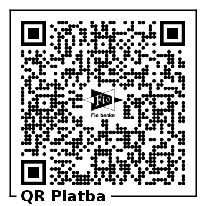

Iniciativa pro vzdělávání v rytmické masáži, z.s.
Thurnova 974/13, Břevnov, 169 00 Praha 6
IČ 6364144
International Symposium on Rhythmical Massage Therapy

Symposium structure
Together with the lectures focused on the main themes, the Symposium offers various workshops and shorter presentations. The poster section will provide an overview of RMT relevant topics. Friday evening's celebration will open with a chamber music concert by Quartetto Intervallo. It is also possible to register for an excursion to the Karlstejn castle with an anthroposophy expert guide in German.
In cooperation with the IFRMT we are preparing a pre-symposium for RMT Therapists to take place on Wednesday the 11th of June (afternoon) and Thursday the 12th of June morning. It’s focus will be on the practical side of the main topics of the Symposium. In case of interest, please don’t forget to register for the pre-symposium in the main registration form (link below).
Date & venue of the Symposium
12.- 14.6. 2025, Galerie SmetanaQ, Smetanovo nábřeží 334/4, Praha 1
Date and venue of the Pre-Symposium
11.6.2025, Emmaus Monastery - Scriptorium, Vyšehradská 49/320, Prague 2
Price
Regular price: 350€
Support price: 400 Euro
Early Bird (Registration by 15. February 2025): 300€
Reduced price for students and socially disadvantaged: 250€
The price includes participation on the program of the Symposium, interpreting and translation services, refreshment during the breaks, and an evening concert on Friday, June 13th 2025.
We do not wish the price to be an obstacle for you to participate at the Symposium. Please, contact us in case you need help with the funding.
Lodging and transportation
Accommodation and transportation is to be secured by the participants individually.
Board
Coffee, tea and refreshments will be served during the breaks.
Contact
Email: iniciativa@rytmickamasaz.cz
Telephone.: +420 602 270 118
Registration
Please register here:

Or click on this link >> I want to register
Instructions for payment in EUR
Cena: 8850 CZK
Sponzorská cena: 10 100 CZK
Early Bird do 15. února 2025: 7600 CZK
Cena pro studenty a sociálně znevýhodněné: 6400 CZK
IBAN: CZ54 2010 0000 0029 0139 9097
BIC/SWIFT: FIOBCZPPXXX
Regular price 350 Euro. Payment indication: Symposium_regular_your name
Support price 400 Euro. Payment indication: Symposium_support_your name
Early bird price 300 Euro. Payment indication: Symposium_early bird_your name
Discounted price 250 Euro. Payment indication: Symposium_discounted_your name
How to get to the venue:
Subway: B line, station Karlovo náměstí, 4 minute walk
Tram: station Moráň or Palackého náměstí, 2 or 4 minute walk
By car: Paid parking available in the street Pod Slovany and at Karlovo náměstí square (2-5 minute walk). No parking directly at the venue.
Organizer
Iniciativa pro vzdělávání v rytmické masáži, z.s.
Guarantor
Mag. Dr. phil. Charlotte Allmer, PhD, MSc, MEd
Ita Wegman Akademie Steiermark


{kind=link}